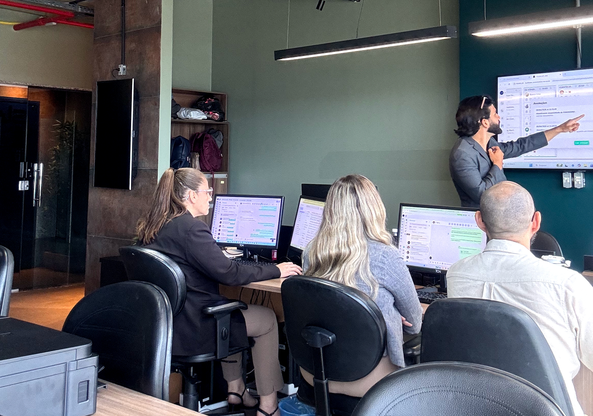

Estrutura, conversão, crescimento
Estrutura comercial para empresas com demanda
Estruture seu comercial para vender com previsibilidade.
Processo, funil e rotina comercial para converter melhor os leads que já chegam.
Para empresas que já investem em demanda, mas ainda dependem de improviso, follow-up solto e vendas sem padrão.
Estrutura Comercial
Conversão
Crescimento
Inteligência Estratégica

Michel Paiva
Estrategista & Implementador de Vendas
O problema não está no marketing.
Está na estrutura da sua operação.
Tráfego sem processo só acelera o caos. Mais leads sem estrutura geram mais problemas.
✕
Leads desperdiçados
O cliente chega, mas some no meio do caminho por falta de acompanhamento.
✕
Falta de processo
A equipe comercial vende no improviso, sem um funil claro de onde cada lead está.
✕
Dependência do dono
Se você não estiver olhando, a operação trava e as vendas não acontecem.
✕
Caos financeiro
Você sente que está deixando dinheiro na mesa todos os dias úteis do mês.
Protocolo Catalisador de Vendas
Implementamos um sistema de vendas dentro da sua empresa. Sem achismos.
01. Análise
Diagnóstico completo da operação e identificação cirúrgica de gargalos invisíveis.
02. Planejamento
Estruturação refinada da jornada de compra, funil e criação do processo comercial.
03. Ativação
Implementação prática do sistema de vendas, transformando demanda bruta em faturamento.
Michel Paiva
Presença, bastidores e direção comercial
Uma camada mais humana para a página, conectando a autoridade do método com a pessoa por trás da implementação.

Estrategista comercial
Michel Paiva

Família & propósito

Manifesto
Resultado não é sorte. É processo.
Inteligência comercial estratégica, premium e orientada a crescimento previsível.
Resultado não é sorte. É processo.
Sistemas geram escala. Processos geram liberdade.
Transformamos operações em máquinas de crescimento.
Inteligência comercial que gera resultados previsíveis.
Aceleramos hoje o que sua empresa colherá no futuro.
O que nós implementamos
Não entregamos planilhas vazias. Estruturamos os pilares para sua empresa vender todos os dias com previsibilidade.
Estrutura Comercial
Mapeamento do processo, papéis, etapas, critérios de avanço e rotina de gestão.
Funil de Vendas
Desenho da jornada comercial para saber o que fazer com cada lead em cada momento.
CRM Personalizado
Organização do pipeline, campos, etapas e visão de controle para a operação comercial.
Processo de Conversão
Roteiros, cadências, follow-up e padrões de abordagem para reduzir perda de oportunidade.
Tráfego Estratégico
Alinhamento entre demanda, capacidade de atendimento e qualidade das oportunidades.
Quer ver onde a operação trava?
Solicitar diagnóstico comercialPerfil ideal
Para empresas que precisam de processo, não de mais improviso.
Para quem é
- ✓Empresas que já recebem leads, indicações ou demanda ativa.
- ✓Operações onde o comercial depende demais do dono ou de poucos vendedores.
- ✓Negócios que precisam organizar CRM, funil, follow-up e rotina de conversão.
- ✓Times que querem previsibilidade comercial com processo claro.
Para quem não é
- ×Quem busca apenas uma campanha pontual ou promessa rápida de tráfego.
- ×Empresas sem disposição para implementar rotina, gestão e acompanhamento.
- ×Operações que não querem registrar dados, medir etapas ou seguir processo.
- ×Negócios que ainda não têm clareza mínima sobre oferta, público e operação.
Receba um diagnóstico estratégico da sua empresa.
Em uma chamada on-line iremos:
Entender sua operação
Identificar gargalos
Analisar seu processo comercial
Mostrar onde você está perdendo vendas
Entregar um plano de ação personalizado
Tudo de forma prática, estratégica e direcionada para o seu cenário atual.
Sem achismo
Sem marketing genérico
Sem fórmula pronta
Você sairá da reunião entendendo:
- ✔ o que está travando seu crescimento
- ✔ onde sua empresa perde dinheiro
- ✔ quais ações devem ser implementadas
Descubra onde seu comercial está perdendo conversão.
Em uma chamada executiva, analisamos demanda, atendimento, funil, CRM e rotina comercial para identificar o próximo ponto de estruturação.
-
✓Entenda o que trava a conversão dos leads que já chegam
-
✓Identifique falhas de processo, follow-up e gestão comercial
-
✓Veja se o Catalisador faz sentido para sua operação
Diagnóstico solicitado
Vamos analisar o perfil da operação e retornar com o próximo passo.
Solicitar diagnóstico comercial
Empresas organizadas crescem.
Empresas no improviso sobrevivem.
AGENDAR DIAGNÓSTICO COMERCIALSua operação no nível high-ticket